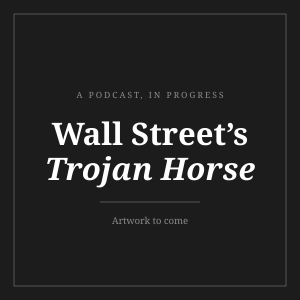

Finance
What I Am Actually Trying to Learn

You ran a valuation this morning and did not notice you were doing it.
Somebody offered you something and you priced it in about four hundred milliseconds. Is this friendship accretive, or has it been quietly dilutive for a year and you have not wanted to say so out loud. Is the extra hour of sleep worth more than the extra hour of work, and worth more to which version of you, the one at eleven at night or the one at six in the morning, because those two are running very different discount rates. We do this constantly, we do it silently, and we almost never write any of it down, which is the only reason it does not look like finance.
I worked it out at a Catan table, of all places. A brick is worth nothing to the player holding four of them and very nearly everything to the player sitting one brick short of a city, and the entire game turns on holding both of those facts at once and knowing which one is true of the person you are trading with. Monopoly taught me the uglier version, which is that a property is worth what the person across from you can be talked into believing it is worth, and that the price printed on the card is mostly a suggestion. And the lunch table taught me the one that actually stuck, because a seat is worth wildly different amounts to different people on different days and the currency was never money, it was who noticed you sat down. I had no language for any of this at eleven. I just kept noticing that the same object changed price depending on who was holding it and what they happened to need that week.
Companies are that, except the board refuses to sit still. A business has a price today that depends on what a buyer believes it will produce in five years, which depends on what customers will want by then, which depends on a competitor’s decision that has not been made yet, which depends on capital priced off a rate somebody will set next quarter. It is a puzzle where every piece moves while you are looking at the others, solved in public, by thousands of people at once, with real money on it. I find that genuinely thrilling and I have stopped pretending it is a strange thing to find thrilling.
Which is where the question I actually care about lives. Not what a company earns, because that is arithmetic and anybody can do arithmetic. What it is quietly worth to somebody who has understood it better than its own accounts have. The accounts are the price printed on the card, and the interesting number has never once been on the card.
I saw it most clearly in a supplement aisle, where two businesses selling more or less the same thing to more or less the same person cleared at six times revenue and at barely one within eight weeks of each other, which is not a rounding error so much as an argument about what was actually being bought. Then I ran into it again inside a finance workflow whose saving was real enough to measure in hours and yet had nowhere on a balance sheet to sit.
I should be honest about the route here, because it was not the obvious one. I did not grow up anywhere near this. What I grew up around was a household in which the arithmetic was never abstract, where somebody was awake at the wrong end of the clock so that a number would come out right at the end of the month, and where I learned early to read a room for the thing nobody was saying out loud. Finance turned out to be that same habit pointed at companies rather than at my own kitchen, which is why the question that holds me is not what a business earns but what it is quietly worth to somebody who has understood it better than its accounts have.
It runs in three places that feed one another, so that an argument I make in writing has to survive being sent to people who will reply to it, and both of those in turn have to survive the show, where I go and ask the people it is actually happening to whether any of it resembles their Tuesday.
The brain dump
This is the blog, and I call it a brain dump because that is honestly what it is. None of it is worth anything unless I am willing to put it somewhere a stranger can disagree with me, so the working stays in, including the parts where I changed my mind halfway down. These are the two I would defend line by line.
 P&G / Thorne5.8x2026E revenue
P&G / Thorne5.8x2026E revenue Celsius / Alani Nu<3x2024A revenue
Celsius / Alani Nu<3x2024A revenue PepsiCo / poppi$1.65bnnet of tax benefits
PepsiCo / poppi$1.65bnnet of tax benefits Bain / Vitabiotics~$1.2bnno public revenue
Bain / Vitabiotics~$1.2bnno public revenue Yellow Wood / Nestlé0.8x2025 sales
Yellow Wood / Nestlé0.8x2025 salesRead the full argument, including the chart and where I think I am wrong.
Where the operating work happened
The journal
The brain dump is where I take a month over something. The journal is the other half of it, which is a newsletter but mostly a diary I happen to send: entries on whichever deal has refused to leave me alone that week, written whether or not the week has been generous with material.
One transaction. What the buyer was actually paying for, stated plainly enough that somebody could tell me I have it wrong. And then the part most writing on this subject leaves out, which is the weakest link in my own reasoning, named by me before anybody else has to find it. I would rather be corrected in a reply than be right in private.
First issues to come. If you would like to be sent them, or you would like to be the person who writes back disagreeing, say so and I will put you on it.
The podcast

Wall Street’s Trojan Horse
A show about how quietly AI has already walked into investment banking. Not the version in the headlines, with the press releases and the transformation decks. The version where a first-year analyst stops doing four hours of work on a Tuesday and mentions it to nobody.
I am collecting perspectives from two groups: first-year analysts who are living inside the change, and the people building the tools that caused it. They describe the same event in almost completely different language, and the distance between those two accounts is the actual show.
Artwork and first episodes to come. If you are a first-year analyst, or you build these tools, I would like to record with you.
What I am looking for
An analyst seat where the work is genuinely difficult and somebody senior is willing to tell me plainly when I have got something wrong, which is a narrower request than it sounds. The longer ambition, and I am aware how it reads set down in writing, is to use these tools to make investment banking a more human business rather than merely a faster one, on the theory that once the searching becomes cheap the judgement is the only thing left, and judgement has always been the part that needed a person in it.
If you work in a bank and have watched this happen from the inside, come on the show. fyruan@usc.edu